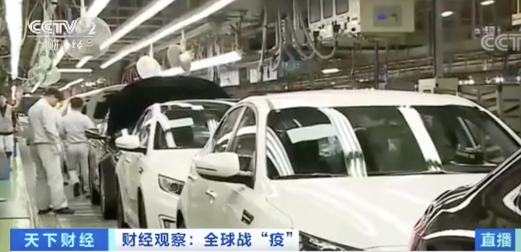

全球汽车产业按下“暂停键”：14家车企100余家工厂被迫停产
原文链接 备份链接 汽车产业链受疫情冲击正在向全球蔓延。 《中国经营报》记者关注到，在3月12～19日这周内，以大众、奔驰、雷诺、标致雪铁龙、通用、福特、菲亚特·克莱斯勒等为代表的多个汽车品牌宣布“停产避险”。而据记者不完全统计，全球范围 …

随着新冠疫情在全球的蔓延，作为韩国出口支柱之一的汽车产业正遭遇供应链脱节、工厂停工等诸多难题。截止到25日凌晨，韩国新增确诊病例100人，再次攀升到三位数，韩国疫情还不能算稳定。疫情对韩国汽车产业影响如何？在首尔的财经频道特约记者带来了她的观察。
△央视财经《天下财经》栏目视频

上个月，由于零部件供应脱节，韩国现代汽车国内生产线不得已大规模停产。
从本周开始，现代汽车已经紧急叫停了在家办公，改为弹性工作制。
昨天（24日），现代汽车宣布位于巴西的现代汽车工厂停产，停产时间将一直持续到下个月9日。
随着疫情在全球的蔓延，目前包括美国、印度、捷克等在内的全球7成以上的海外工厂已经全部停产。

从资本市场来看，近两个月内现代汽车的股价惨遭腰斩，甚至面临股票总市值被挤出市场前十位的危机，韩国市场汽车板块股价的平均跌幅也已经达到了43.6% 。

在供应链脱节、工厂停工、经销商停业、市场需求萎缩等多重压力下，韩国整车企业、零部件制造商等正面临前所未有的生存危机。业内预测，韩国汽车零部件公司或将在两个月内出现连锁倒闭。

数据显示，上个月韩国5大整车企业生产量同比减少了近3成，国内销量和出口分别减少了约两成左右。汽车行业雇佣了韩国约12%的劳动力，在韩国整体出口额中占比达到8%，是继半导体后排名第二位的出口支柱产品。

日前，韩国政府紧急召开应对会议，表示将针对车企在出口通关、企业融资等方面给予政策和财政支持，同时加大对汽车零部件制造商的支持，并号召全国有购车计划的公共机关尽早执行购车预算，以扶持汽车行业暂渡难关。
来源：央视财经（ID：cctvyscj）


推荐阅读

点击大图 |一个华尔街投资银行家的至暗时刻

点击大图 |疯狂口罩投资：纸尿裤厂转产，原材料涨价

原文链接 备份链接 汽车产业链受疫情冲击正在向全球蔓延。 《中国经营报》记者关注到，在3月12～19日这周内，以大众、奔驰、雷诺、标致雪铁龙、通用、福特、菲亚特·克莱斯勒等为代表的多个汽车品牌宣布“停产避险”。而据记者不完全统计，全球范围 …
原文链接 备份链接 一些防疫措施影响到部分零部件加工生产，部分跨国公司订单中断。供应链较长且分工复杂的汽车和电子制造行业，压力更加明显。但此次疫情并不会对供应链产生可以衡量的长期影响。中国花30年打造的供应链， …
原文链接 备份链接 中国服装消费市场还未恢复，爆发的欧美疫情又打击了海外消费市场，内贸和外贸都处于不确定中，高度依赖全球服装产业链的中国老板们面临考验 文 | 《财经》记者 马霖 韩舒淋 编辑 | 余乐 从无法复产复工，担心交期延迟，到 …
原文链接 备份链接 武汉新增归0，中央再次强调“全面恢复”正常生产生活秩序。海外新增超过2万例。美国将为全民提供免费筛查检测。德国面临“二战以来最大挑战”。意大利伦巴第地区仍有40%居民在外自由活动 文 |《财经》 …
原文链接 备份链接 韩国新增患者趋势明显放缓。疫情暴发一个月，韩国如何控制蔓延？ 韩国疫情可分三个阶段：1月20日确诊首个病例至2月18日，以防堵和抑制社区传播为核心；2月19日至3月中旬，“新天地教会”集体感染致疫情暴发，大邱和庆尚北道 …